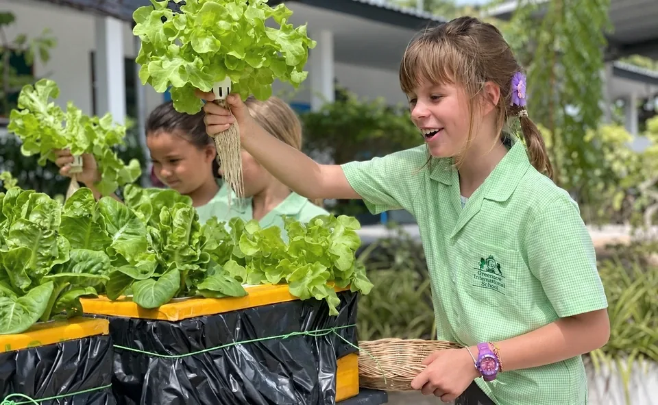
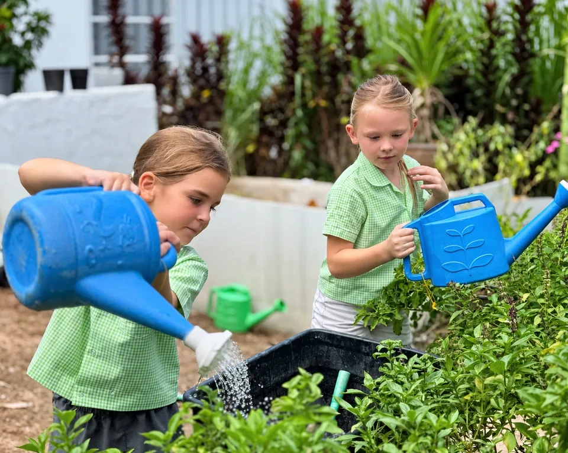

Environmentality
Environmental awareness is part of Greenacre's identity, helping students understand their relationship with the natural world and their responsibility towards it.
Learning in, about and for the environment
Environmental responsibility sits within Greenacre's GREEN values and is woven through school life. Students are encouraged to understand the importance of protecting the planet and to become environmental stewards in their communities.
Our approach is practical as well as academic. Environmental learning helps children develop the knowledge, responsibility and habits needed for a more sustainable future.

More than a classroom topic
In the environment
Using Greenacre's natural surroundings as a place for observation, exploration and learning.
About the environment
Building understanding of the natural world, sustainability and the impact people have upon the planet.
For the environment
Turning awareness into responsible choices and practical action, including green initiatives and conservation.

Growing responsible global citizens
Greenacre prepares students to become environmentally aware citizens who can make a positive contribution to their communities.
Greenacre's environmental values are intended to be lived every day, not simply taught as isolated subjects.